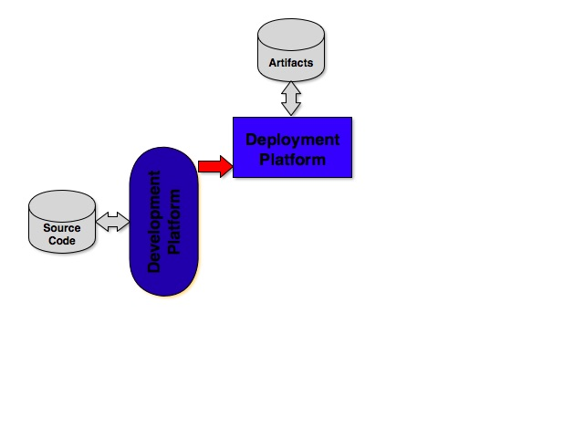
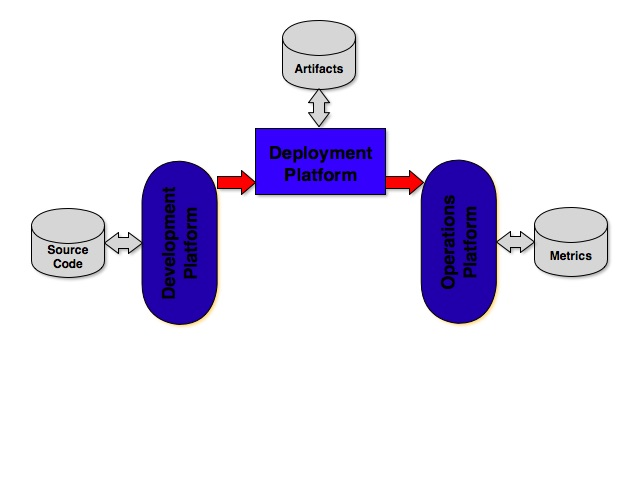
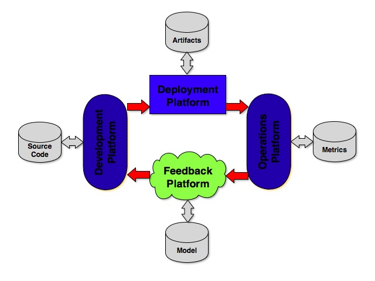
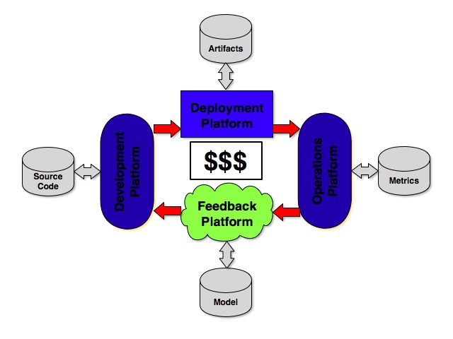

Company Mission
- Be(come) the Thought- and Market-Leader in Smart Document Management
- Get the best possible value out of document interactions: Any time, Any where, Always, Efficient
- Enable the world to feel good about signing a document
Company Goal
Company KPIs (Nitro Cloud)
Company Fun Facts
Infrastructure Mission
- Get features and value into production as fast as possible as often as possible as easy as possible
- Be invisible, be the oil in the gearbox, make engineers smile, do NOT get in the way, reduce/remove friction, ...
- First: Get it into production (one slice), Second: Scale it (for throughput, for availability, for ...)
- ???
Infrastructure KPIs
- Availability: Uptime (99%), # number of failed conversition (0), ...
- Efficency/Innovation: # number of deployments/day (???), ...
- Cost: Cost of Infra (people, capex, opex, ...) over revenue, ...
- ???
Infrastructure Engineering

Infrastructure Engineering

Infrastructure Engineering

Infrastructure Engineering

Infrastructure Engineering
